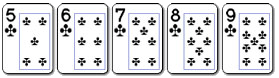
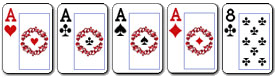
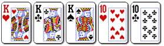
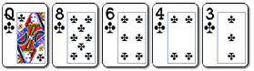
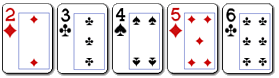
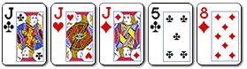
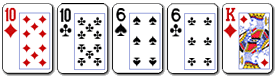
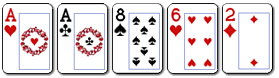
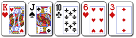

A Texas holdem menete
Minden játék valamilyen kötelezõ téttel kezdõdik, amiért a pókerjátékosok versengenek. A kisvak és a nagyvak a kötelezõ tét. Az egyes játékosok bármely alap pókerjátékban a saját stratégiájukat követve licitálnak, azaz választanak a szabályokban leírt cselekvések közül, melyek a következõk:
PASSZ – Ha nem volt még tét az adott licitkörben, a játékos passzolhat. A passzolással átadja a lehetõséget az óramutató járásával egyezõ irányban lévõ következõ játékosnak. A passzolással nem vész el a pothoz való jog, csak a licitálás joga. Ha az összes partiban levõ játékos passzol, a kör befejezettnek tekinthetõ.
NYITÁS – Ha nem volt még licit az adott licitálási körben, a játékos nyithat. Ha egy játékos nyit, az óramutató járásával megegyezõ irányban lévõ következõ játékos (és a többi játékos is) dobhatja lapjait, emelhet vagy tarthatja a tétet.
DOBÁS – A dobással elvész a kasszára való jogosultság. Ha egy játékos bedobja lapjait, az adott játékban már nem kell/nincs lehetõsége több pénzt betenni, de nem is nyerheti meg a kasszát.
MEGADÁS – Ha az adott körben már volt nyitás, a játékos tarthatja ezt a tétet. A tartás feltétele, hogy a játékos befizesse azt a tétet, amit egy vagy több ellenfele berakott.
EMELÉS – Ha az adott körben már volt nyitás, a játékos emelheti ezt a tétet. Az emelés feltétele, hogy a játékos tartsa az elõzõ tétet, és berakjon egy még nagyobbat. A további játékosoknak ezt az emelést tartaniuk kell, vagy tovább emelniük ahhoz, hogy fenntartsák a potra való jogukat.
Az egyes licitkörök addig tartanak, amíg minden játékos vagy megadja a szükséges tétet, vagy eldobja a lapját (ha senki nem nyitott, a kör akkor ér véget, amikor minden játékos passzolt). Miután a licitkör lezárult, sor kerül a következõ lap leosztására és egy újabb licitkörre, vagy véget ér a leosztás.
Az utolsó licitkörben megtett utolsó tét megadását a mutatás követi. A mutatáskor dõl el, hogy ki nyeri a potot, ekkor a játékosok mindegyike megmutatja a lapját. Elõfordulhat az is, hogy nem kerül sor mutatásra. Ez a helyzet akkor áll elõ, amikor valamelyik játékos nyit vagy emel, viszont az új tét tartását egyetlen aktív játékos sem vállalja (más szóval az összes többi játékos eldobja a lapjait). Ilyenkor az emelõ nyeri el a teljes potot.
A vakok
A holdem játékban a „gomb” vagy „osztógomb” jelzi, hogy az adott leosztásban melyik játékos a névleges osztó. A leosztás kezdete elõtt az a játékos, aki az óramutató járásával egyezõ irányban közvetlenül a gomb mellett ül, berakja a „kisvakot”, ami az elsõ kötelezõ tét. Az a játékos, aki az óramutató járásával egyezõ irányban közvetlenül a kisvak mellett ül, berakja a „nagyvakot”, ami általában a kisvak kétszerese, de a vakok mérete az alapok és a licitstruktúra függvényében változhat.
Fix limit játékokban a nagyvak összege megegyezik a kistét összegével, a kisvak összege pedig általában a nagyvak fele, de az alaptól függõen akár nagyobb is lehet. Például egy 2 $/4 $ fix limit játékban a kisvak 1 $, a nagyvak 2 $. Egy 15 $/30 $ fix limit játékban a kisvak 10 $, a nagyvak pedig 15 $.
A
pot limit és no limit játékokban a játék alapjára a vakok méretével
utalunk, tehát egy 1 $/2 $ holdem játszma esetén a kisvak
1 $, a nagyvak pedig 2 $.
Az adott játék struktúrájától
függ, hogy a játékosoknak be kell-e fizetni az „ antét”,
ami egy újabb kötelezõ tét, és általában mindkét vaknál kisebb,
valamint az asztal összes játékosa számára kötelezõ.
Ezután minden
játékos megkapja két zárt lapját. A licitálás, amit a „célkeresztben”
ülõ, vagyis a nagyvak balján található játékos kezd, az óramutató
járásával egyezõ irányban folyik.
A licitálási lehetõségek
A holdem játékban csakúgy, mint más pókervariációk esetén, a játékosok a következõ lehetõségek közül választhatnak: dobás, passz, nyitás, megadás és emelés. Azt, hogy a fenti lehetõségek közül melyek állnak rendelkezésre, az elõzõ játékosok cselekedetei határozzák meg. A játékosok mindig dönthetnek úgy, hogy eldobják a lapjukat, ezzel lemondanak a kártyákról és a továbbiakban nem lesznek érdekeltek a kasszában. Ha még senki nem nyitott, akkor a soron következõ játékos passzolhat, ezzel emelés nélkül megtarthatja a lapjait, vagy nyithat is. Ha egy játékos nyitott, akkor a többi játékos dobhat, megadhat vagy emelhet. Megadáskor annyi zsetont kell berakni, amennyit az elõzõ játékos hívott. Emeléskor nem csak álljuk az elõzõ tétet, hanem meg is emeljük azt.
A flop elõtt
Miután a játékosok megnézték a lapjaikat, lehetõségük van megjátszani azokat azáltal, hogy megadják a nagyvak összegét, vagy megemelik azt. Az akció a nagyvak balján ülõ játékosnál kezdõdik. A nagyvak összege ebben a körben „élõ” tétnek számít. Az elsõ beszélõ dobhat, megadhat vagy emelhet. Például, ha a nagyvak 2 $, akkor a megadás 2 $-ba kerül, az emelés pedig legalább 4 $-ba. Ezt követõen a játékosok sorra cselekszenek az óramutató járásával egyezõ irányban.
Megjegyzés: A
játék különbözõ változataiban a licitálási struktúra eltérõ lehet. A
fix limit holdem, a no limit holdem és a pot limit holdem licitálási
rendszerének magyarázata alább olvasható.
A licit a további
licitkörökben addig folytatódik, amíg minden még partiban levõ
játékos (akik még nem dobták el a lapjukat) egyezõ mértékû tétet tud
rakni a kasszába.
A flop
Most három lapot osztanak le az asztalra, színnel felfelé. Ezt nevezik flopnak. A holdemben a flop három lapja közös lapnak számít, amit minden játékos felhasználhat pókerkeze megalkotásához. A flop utáni licitkört az osztógombtól az órajárással megegyezõ irányban ülõ elsõ aktív játékos kezdi. A licitálási lehetõségek hasonlók, mint a flop elõtt, azzal a kivétellel, hogy ha még senki nem nyitott, akkor az adott játékos passzolhat, amivel a licit lehetõségét az órajárással megegyezõ irányban ülõ következõ játékosnak adja át.
A turn
A flopkör licitjének befejezése után az asztalra osztják a turnt, színnel felfelé. A turn a holdem negyedik közös lapja (ezért negyedik utca néven is ismeretes). A kört az óramutató járásával egyezõ irányban közvetlenül az osztógomb mellett lévõ játékos kezdi meg.
A river
A turn licitjének befejezése után színnel felfelé leosztják az ötödik utcát (a rivert). A river a holdem ötödik és egyben utolsó közös lapja. A licitálást az óramutató járásával egyezõ irányban közvetlenül az osztógomb mellett lévõ játékos kezdi meg. A szabályok megegyeznek a turnnél leírtakkal.
A mutatás
Amennyiben
az utolsó licitkör befejezése után egynél több résztvevõ marad
játékban, úgy az utolsó licitáló, illetve emelõ mutatja meg lapjait.
Ha az utolsó körben senki sem licitált, úgy elõször az osztógombhoz
az óramutató járásával egyezõ irányban legközelebb ülõ játékos
mutatja meg lapjait. A potot a legerõsebb ötlapos kezet birtokló
játékos nyeri el. Azonos kezek esetén a pot egyenlõ arányban oszlik
meg a nyertesek között. A holdem szabályai szerint a különbözõ színek
egyenlõ értékûek.
A pot kifizetése után újabb holdem leosztás
kezdõdhet meg. Az osztógomb átkerül a korábbi birtokosa mellett lévõ
játékoshoz az óramutató járásával egyezõ irányban, majd minden
játékos új lapokat kap.
No
limit Texas holdem
No
limit holdemben a minimális tét a nagyvak értékével megegyezõ,
azonban a játékosok annyival licitálhatnak, amennyivel csak
szeretnének – akár az összes zsetonjukkal.
No
limit holdemben a minimális emelés legalább az adott kör elõzõ
tétjével vagy emelésével megegyezõ összeg. Például ha az elsõ
cselekvõ 5 $-ral nyit, a második játékosnak legalább ennyivel kell
emelnie (vagyis a teljes licit 10 $ lesz).
A lehetõ legnagyobb
emelés: a zsetonkupacunk mérete (az asztalnál lévõ összes
zsetonunk).
No limit holdemben nincs korlát a
megengedett emelések számára vonatkozóan.
Lapkombinációk
Színsor: öt azonos színû, értékben egymást követõ lap.

Döntetlen esetén: az értékesebb lapokból összeálló színsor nyer.
A lehetõ legjobb színsor royal flöss néven ismert, ami egy ászt, egy királyt, egy dámát, egy bubit és egy tízest tartalmaz ugyanabból a színbõl. A royal flöss verhetetlen kéz.
Póker: négy azonos értékû lap, egy kísérõlappal kiegészülve.

Döntetlen esetén: az értékesebb lapokból összeálló pókert birtokló játékos nyer. Amennyiben közös lapokkal játszott játékban a játékosok azonos pókerrel rendelkeznek, a legértékesebb ötödik kísérõlapot birtokló játékos nyer.
Full: három azonos értékû lap és két másik, egymással szintén azonos értékû lap.

Döntetlen esetén: a potot a három magasabb és egymással egyezõ értékû lapot birtokló játékos nyeri el. Amennyiben közös lapokkal játszott játékban a játékosok a három azonos értékû lappal közösen rendelkeznek, a két legmagasabb és egymással egyezõ értékû lapot birtokló játékos nyer.
Flöss: öt azonos színû lap.

Döntetlen esetén: a legértékesebb lapot birtokló játékos nyer. Amennyiben szükséges, a döntésnél a második, harmadik, negyedik, illetve ötödik legértékesebb lap is figyelembe vehetõ. Amennyiben mind az öt lap azonos értékû, a pot megoszlik. A színek erõsségét nem használhatjuk a kezek közötti különbség eldöntésére.
Sor: öt, értékben egymást követõ lap.

Döntetlen esetén: az értékesebb lapokból összeálló sor nyer.
Döntetlen esetén: az értékesebb lapokból összeálló sor nyer. Megjegyzés: az ász a sor elején és végén egyaránt lehet, viszont ez az egyetlen ilyen tulajdonságú lap. A legmagasabb sor az A, K, Q, J, T (ász magas), a legalacsonyabb pedig az 5, 4, 3, 2, A (ötös magas).
Drill: három azonos értékû lap, két, egymástól független kísérõlappal kiegészülve.

Döntetlen esetén: az értékesebb lapokból összeálló drillt birtokló játékos nyer. Amennyiben közös lapokkal játszott játékban a játékosok azonos drillel rendelkeznek, a legértékesebb kísérõlapot, illetve, amennyiben szükséges, a második legértékesebb kísérõlapot birtokló játékos nyer.
Két pár: két-két, egymással páronként és csak páronként azonos értékû lap, melyeket egy kísérõlap egészít ki.

Döntetlen esetén: a magasabb értékû párt birtokló játékos nyer. Amennyiben a legmagasabb értékben két játékos is birtokol párt, úgy a döntést a második legmagasabb pár határozza meg. Amennyiben még ezeknek a pároknak az értéke is egyezik, úgy a magasabb értékû kísérõlapot birtokló játékos nyer.
Pár: két azonos értékû lap, három, egymástól független kísérõlappal kiegészülve.

Döntetlen esetén: a magasabb értékû párt birtokló játékos nyer. Amennyiben a legmagasabb értékben két játékos is birtokol párt, a döntés a legmagasabb értékû kísérõlap, illetve szükség esetén a második vagy harmadik legmagasabb értékû kísérõlap alapján történik.
Magas lap: bármely olyan kéz, amely a fenti kategóriák egyikébe sem sorolható be.

Döntetlen esetén: a legértékesebb lap birtokosa nyer. Amennyiben szükséges, a döntésnél a második, harmadik, negyedik, illetve a legkevésbé értékes lap is figyelembe vehetõ.